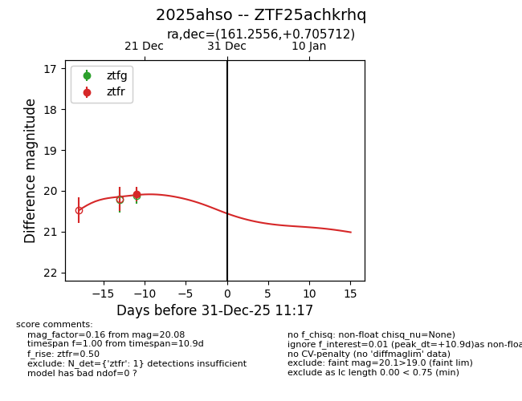
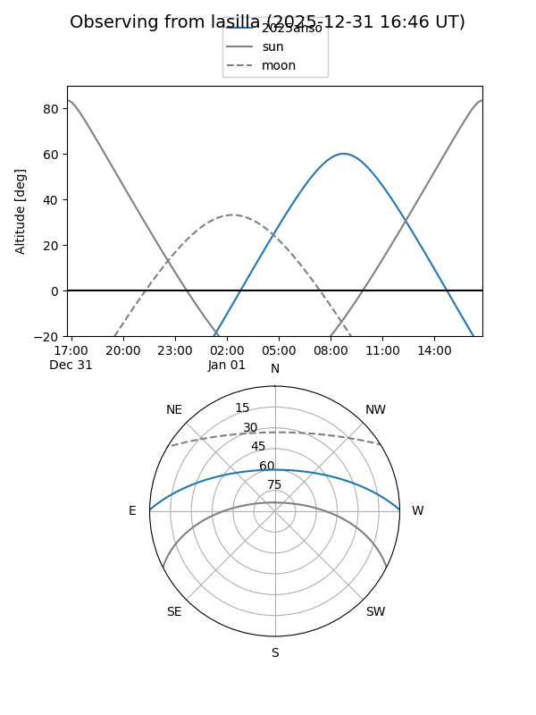
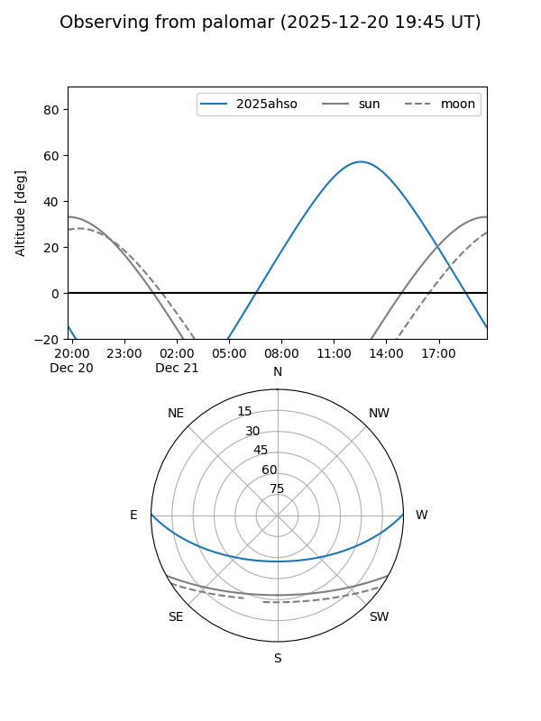
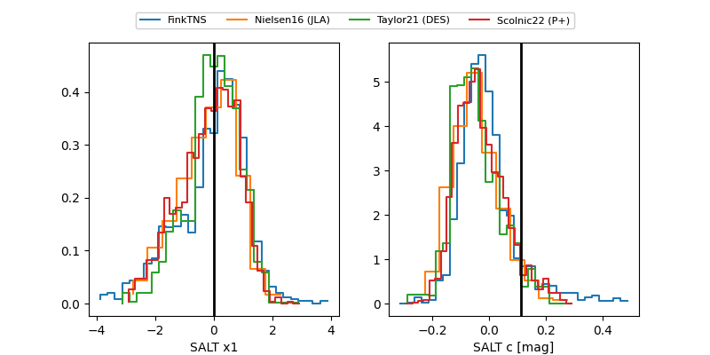

2025ahso
Target 2025ahso at 2025-12-22 14:46
Aliases and brokers:
FINK: fink-portal.org/ZTF25achkrhq
Lasair: lasair-ztf.lsst.ac.uk/objects/ZTF25achkrhq
ALeRCE: alerce.online/object/ZTF25achkrhq
TNS: wis-tns.org/object/2025ahso
YSE: ziggy.ucolick.org/yse/transient_detail/2025ahso
alt names
ZTF25achkrhq (ztf,fink_ztf)
2025ahso (tns,yse)
Coordinates:
equatorial (ra, dec) = 161.2556,+0.70571
equatorial (HMS+DMS) = 10:45:01.34,+00:42:20.56
galactic (l, b) = (248.6918,+49.77852)
Flags:
Photometry:
last ztfr=20.08
1 ztfr detections
Lightcurve

Visibility


Additional plots
